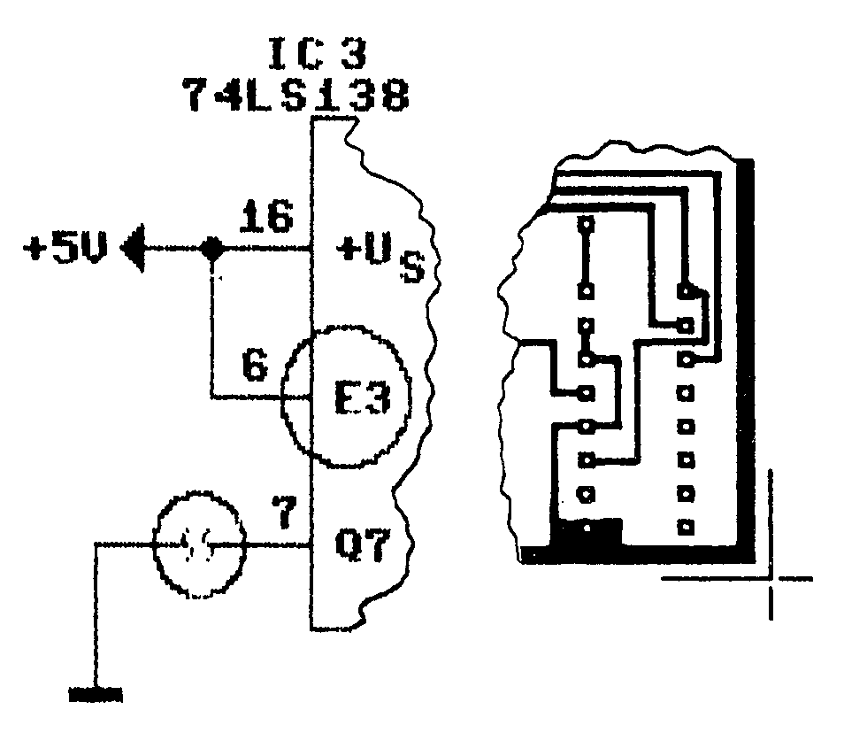

Fehlerteufelchen
Precompiler für Textdateien, Ausgabe 12/86, Seite 68ff
Zur Anpassung des Basic Precompilers an das Master-Text-Format sind neben den aufgeführten Programmzeilen folgende Änderungen erforderlich (Listing 1).
2 RESTORE:FOR I=0 TO 10:READ A:POKE 828+I,
A:NEXT <115>
380 POKE 49520,76:POKE 49521,60:POKE 49522
,3 <230>
3150 DATA 32,207,255,201,142,240,3,76,115,
193,96 <076>
Partnervermittlung, Sonderheft 11, Seite 144
Im Programm Partnervermittlung fehlt die MSE-Zeile ab Adresse 3769. Sie ist versehentlich in die nächste Spalte auf der gleichen Seite gerutscht (zwischen 37E1 und 37E9) und muß an entsprechender Stelle eingesetzt beziehungsweise ignoriert werden.
Computer-Sound in Stereo, Ausgabe 11/86, Seite 160 und 161
Bei der Innenschaltung des SN74LS138 (Bild 4) sind die Freigabeeingänge E1 (Pin 4) und E2 (Pin 5) invertiert. Der Ausgang Q7 (Pin 7) ist nicht invertiert. Ferner ist es sinnvoll, E3 des IC3 an +5 V zu legen und die Verbindung zwischen Q7 und Masse zu trennen. Die Änderungen im Schaltbild (Bild 2) und Layout (Bild 3a) finden Sie in Bild 1.

SYS-Zeile für Basic-Programme, Ausgabe 11/86, Seite 25
In der elften Zeile steht »S=2297:A$+STR$(S):...«. Das ist falsch. Richtig muß es heißen »S=2297:A$=STR$(S):...«.
3D-Grafik-Master, Ausgabe 11/86, Seite 56
Im ersten Listing hat sich ein Fehler in der Zeile 330 eingeschlichen. Die Zeile lautet richtig:
330 A=A+1:ON A GOTO 340, 370, 400. Außerdem ist die Speicherzelle für die INIT-Tabelleninitialisierung (Seite 56, Zeile 22 von unten) nicht 40960, sondern 20023.
XREF 7.0, Ausgabe 9/86, Seite 71
Folgende Zeilen (Listing 2) sollten geändert werden, um eine einwandfreie Funktion zu gewährleisten.
710 IF A$="N" THEN CLOSE 1: GOTO 580
720 IF ZT% AND ZU% THEN 1310
1125 PRINT "{2DOWN,6SPACE}";: FOR J=1 TO 23:
PRINT "U";: NEXT : PRINT : PRINT "{2UP
}TEXT: ";
1130 OPEN 1,0: INPUT#1,TE$: PRINT : CLOSE 1:
TE$=LEFT$(TE$,23)
1150 IF TE$<>LEFT$(LE$,23) THEN VA$(I)=LEFT$
(VA$(I)+LE$,57)+TE$
1272 IF LEN(VA$(I))>70 THEN PRINT#1,LEFT$(VA
$(I),8);MID$(VA$(I),57): GOTO 1275
1273 IF LEFT$(VA$(I-1),4)=LEFT$(VA$(I),4) TH
EN 1275